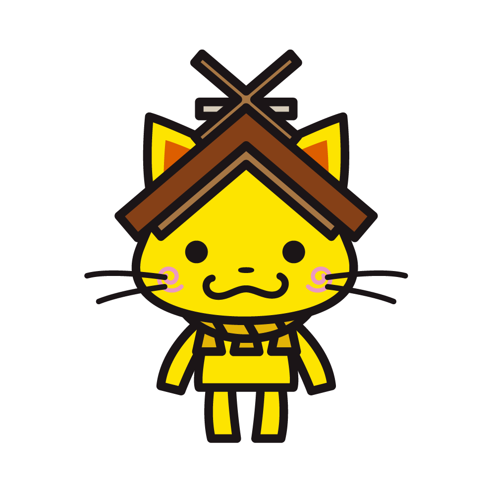
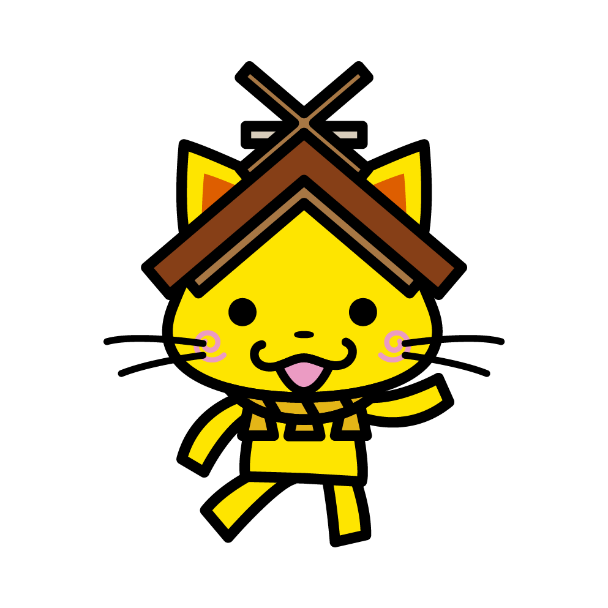

デザイン利用 | しまねっこの部屋（島根県観光キャラクター しまねっこ 公式）
本文の保存版（2026-11-22）
出典URL：https://www.kankou-shimane.com/shimanekko/design/download.php
しまねっこの部屋
- 出演申込
- デザイン利用
- X
- Ticktok
- Youtube
デザイン利用
しまねっこロゴ・イラスト ダウンロード
いろんなしまねっこをダウンロードすることができます。
ぜひお気に入りをみつけてみてください。
しまねっこイラスト
まとめてダウンロード（zip）（86.7MB）
しまねっこロゴ
まとめてダウンロード（zip）（6.68MB）
- カラー
- モノクロ
- 線画
ロゴ・イラストの上をクリックすると、画像のダウンロードが開始されます。
zipファイル形式で保存されますので、解凍を行った上でご使用ください。
（まとめてダウンロードもぜひご活用ください。）


日本語_キャラクター入り（オレンジ） 日本語_キャラクター入り（緑） 日本語_キャラクター入り（ピンク） 日本語_キャラクター入り（青） 日本語_ローマ字入り（オレンジ） 日本語_ローマ字入り（緑） 日本語_ローマ字入り（ピンク） 日本語_ローマ字入り（青） 日本語_シンプル（オレンジ） 日本語_シンプル（緑） 日本語_シンプル（ピンク） 日本語_シンプル（青） 英語（オレンジ） 英語（緑） 英語（ピンク） 英語（青） 英語（オレンジ） 英語（緑） 英語（ピンク） 英語（青）
日本語_キャラクター入り（モノクロ） 日本語_ローマ字入り（モノクロ） 日本語_シンプル（モノクロ） 英語（モノクロ） 英語（モノクロ）
※AI（Illustrator）形式のデータをご希望の場合はご連絡ください。
mail:info（＠）shimakanren.or.jp ※（＠）は半角@に置き換えてください。
地図で使用する画像
- しまねっこの画像
https://www.kankou-shimane.com/shimanekko/images/design/dl01/char01.png - しまねっこの画像（予備）
https://www.kankou-shimane.com/shimanekko/images/design/dl01/char78.png